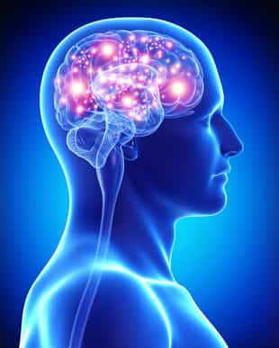

You already know that testosterone is the biological cause of masculinity, but did you know that your T-level is also a marker of your overall mental health? Or that it determines how strong your bones are? That’s right. The impact of this hormone is far wider than most men think. In this article I’ll discuss seven things every man needs to know about testosterone.
1. Low Testosterone Can Make You Depressed
Australian researchers brought 3987 men into a lab and assessed them for depressive symptoms. The men with testosterone levels in the lowest quintile also had the highest prevalence of depression (1).
On the flip side, an analysis of 16 human trials with 944 subjects revealed a significant positive impact of testosterone treatment on mood (2). Similar results were found in a Japanese study that found 6-months of testosterone treatment to relieve depressive symptoms from 63% of subjects (3).
If you’ve been wrestling with a bout of depression, it’s likely that declining T is a contributing cause.
2. Testosterone Improves Your Mental Cognition
Men with low testosterone and memory complaints significantly improved performance on various measures of cognitive functioning after 24 weeks of testosterone treatment (4). The same is true for otherwise healthy men who, when given testosterone, showed significantly improved performance in verbal fluency tests (5).
The exact mechanisms of testosterone’s influence on the brain are not exactly known, but researchers theorize that it plays a role in preventing brain tissue decay (6). This could explain why low testosterone is directly linked with an increased chance of developing Alzheimer’s (7).

3. Testosterone Keeps Your Bones Strong
108 men over the age of 65 were randomly assigned to wear a testosterone patch or a placebo patch for 36 months. Bone mineral density was measured before and during the treatment. At the end of 36 months, the men with low pretreatment testosterone levels experienced a significant increase in overall lumbar spine bone density (8).
Other research has found low testosterone to be independently associated with the risk of osteoporotic fracture in elderly men (9). To maintain strong and healthy bones well into old age, ensure that you keep your T-levels in check.
4. Testosterone Drives Your Competitiveness
As men, it is in our nature to be competitive. Research is now beginning to show that it is in fact testosterone that fuels this drive.
64 male subjects were assessed for their T-level before and after a rigged one-on-one competition. After the first round of competition, subjects decided whether or not to compete again. Interestingly, fluctuations in T predicted the individual subjects’ decisions to compete: losers who experienced a spike in testosterone were much more likely to choose to compete again compared to the losers who experienced a drop in T (10). Similar results were noted in university tennis players: testosterone levels were higher for the players that won their matches compared to those who lost (11).
5. Testosterone Increases Your Dominance
Men with high testosterone are more likely to engage in dominant behaviour that is intended to enhance one’s status over another (12). Now, at times this behaviour can be expressed aggressively, like is the case with chronically aggressive prisoners (13), but it doesn’t always play have to play out this way.
In a study of young boys, aged 6-13, researchers found that the ones perceived as socially dominant by their peers had higher testosterone levels compared to the boys perceived as being less socially dominant (14). Furthermore, researchers found that the boys noted for showing physical aggression had lower T compared to the boys who had no history of physical aggression. These aggressive boys with low T also had lower grades and were unpopular with their peers. The researchers concluded testosterone levels to be positively correlated with social success rather than with physical aggression.
6. Testosterone Makes You Less Risk Averse
High risk equals high reward, right? Well, that’s what they say anyway. But to that point, many media commentators said that testosterone was to blame for the 2008 financial crisis. They said that it was the Wall Street warriors with jacked up testosterone levels making risky decisions that led to the collapse. Whether that’s true or not, who knows, but the research performed in this area is interesting to note.
A financial traders morning level of testosterone is an accurate predictor of his day’s profitability. Researchers found that a trader’s willingness to engage in higher risk also set him up for the highest chances of scoring big (15).
Gamblers with high testosterone also tend to engage in greater risks (16). This was found to be true in both men and women. In yet another study, MBA students with high levels of T were more likely to pick riskier career paths (17).
Your relationship to risk is a major determinant of how your life turns out. This is not to say that you should go all in all the time, but if you look at the men who have achieved greatness, they are also the ones who have engaged in a hefty amount of risk.
7. Testosterone Makes You Live a Longer and More Virile Life
Low testosterone levels are independently associated with an increased risk of death from all causes (18).
794 men, aged 50-91, were followed up with for 20 years (19). During this time, 538 deaths occurred. The men with low testosterone levels were 40% more likely to die compared to those with higher T-levels. This relationship held true even after considering factors such as age, body fat, lifestyle, blood pressure, diabetes, and cardiovascular disease.
To Sum Up
Your testosterone level is a major determinant of your overall health and well-being. Not only does testosterone help you maintain a lean and muscular physique, but it also ensures that your mind is functioning near peak potential and that your bones remain strong and healthy well into old age.
The aim of this article was to have you understand the importance of keeping your T-levels in check. Now, a lot of the research cited above has been performed using testosterone treatments, but this does not mean that you need to consider it as well. Unless you have an ailment that is holding your body back from producing T, there is no reason to consider artificial treatment. The natural route is the best route. Step one is to measure your T to find out where you are, after which you can begin making the simple changes in diet and lifestyle to ramp up your natural production.
Read More: 5 Easy Ways To Boost Your Testosterone